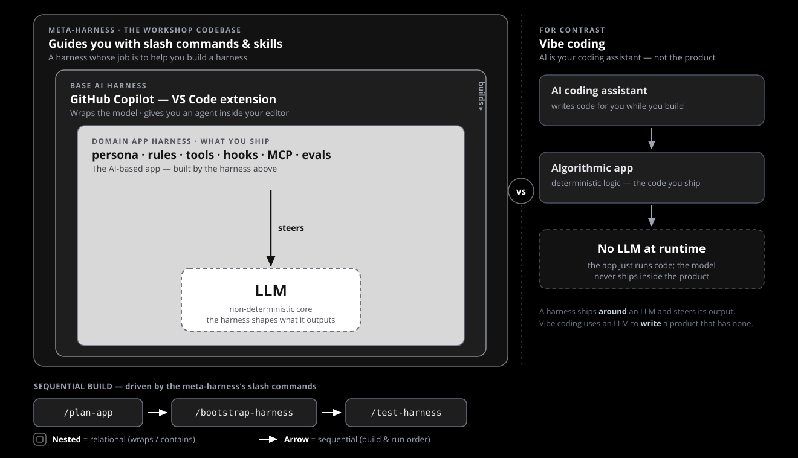

Agentic Harness Engineering · Reference
Harnesses all the way down
One picture for three ideas: a meta-harness that builds harnesses, GitHub Copilot as the base AI harness it runs inside, and the domain app harness you ship to steer an LLM — as distinct from vibe-coding an algorithmic app where the model never ships inside the product.

Relational — harnesses that wrap harnesses
Read the nesting from outside in. Each layer wraps the next:
Meta-harness — this workshop codebase. Its /slash commands and skills exist to help you build a harness.
Base AI harness — the GitHub Copilot VS Code extension. It wraps the model and gives you an agent in your editor.
Domain app harness — what you ship: persona, rules, tools, hooks, MCP, evals — the AI-based app itself.
Sequential — the build pipeline
The meta-harness moves you through an ordered set of slash commands:
/plan-app → /bootstrap-harness → /test-harness.
Each step's output feeds the next; the result is the domain app harness in the center.
The point — steering an LLM
The domain harness steers a non-deterministic LLM at runtime. The harness is everything around the model that shapes what it outputs.
Not the same as vibe coding
In vibe coding the AI is your coding assistant: it writes an algorithmic app, then steps away. The shipped product runs plain code with no LLM at runtime.
Source: assets/harness-recursion-diagram.svg (black / white / gray, matches the deck).
Back to Start here.